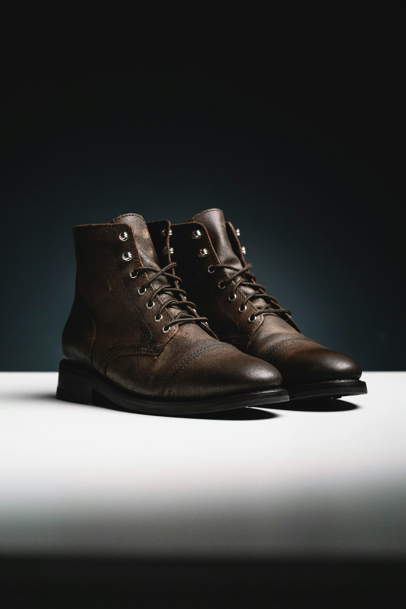

Textile History

1. The Primal Necessity of Foot Protection
Long before the advent of tailored garments or woven tunics, our prehistoric ancestors recognized that protecting the feet from frostbite, thorns, and jagged mountain rocks was a fundamental prerequisite for survival. The earliest foot coverings were crude pieces of animal hide bound around the ankles with leather thongs—functional, but stiff, unyielding, and prone to rotting when damp.
The invention of looped and knitted hosiery represents one of humanity's greatest technological and artistic achievements: the creation of a three-dimensional, elastic textile vessel that conforms perfectly to the complex topography of the moving human foot.
2. The Chronological Epochs of Hosiery Evolution
The story of the sock unfolds across five monumental historical epochs:
Epoch I: Ancient Nålebinding (1000 BCE – 1000 CE)
Preceding modern two-needle knitting by over a millennium, nålebinding (knotless netting) was practiced by ancient Egyptians, Scandinavians, and Viking seafaring cultures. Using a single flat needle carved from bone or antler, the maker threaded individual lengths of wool yarn through preceding loops, creating an interlocking mesh that could not unravel even if punctured by sharp blades. Famous surviving examples, such as the 4th-century Coptic split-toe socks discovered in Oxyrhynchus, Egypt, demonstrate astonishing textile mastery.
Epoch II: Medieval Guild Hosiery & Aristocratic Silk (1200 – 1550)
During the European Middle Ages, fine hosiery was an exclusive emblem of royal aristocracy and religious power. Master knitters formed elite craft guilds in Paris, London, and Florence, using four to five fine steel needles to knit luxurious stockings from Spanish Merino wool and Italian mulberry silk. Hand-knitted stockings were frequently embroidered with gold bullion thread and presented as diplomatic gifts between monarchs.
Epoch III: William Lee and the Mechanical Stocking Frame (1589)
In 1589, an English clergyman named William Lee invented the mechanical stocking knitting frame—the world's first automated textile machine. Lee's wooden frame used hooked needles to knit stitches twelve times faster than a human hand. Although Queen Elizabeth I famously refused Lee a patent for fear it would put thousands of traditional hand knitters out of work, Lee's invention laid the technological bedrock for the entire Industrial Revolution.
Epoch IV: The Circular Knitting Cylinder & Wartime Knitting (1860 – 1945)
The mid-nineteenth century brought the circular hosiery cylinder, enabling seamless tubular knitting. During World War I and II, national campaigns urged citizens to "Knit for Victory," producing millions of heavy wool socks for soldiers enduring the freezing, wet trenches of Europe. Famous sock heels, such as the German short-row heel and the heel flap, were perfected during this era.
Epoch V: The Modern Artisanal Revival (Present Day)
In the twenty-first century, a growing global counter-movement has rejected cheap synthetic disposable socks in favor of slow, transparent craftsmanship. At Warm Weave Hill, we synthesize five centuries of hosiery heritage: combining the seamless comfort of ancient hand linking with ethical 18.5µm Merino wool and botanical natural dyes.
| Historical Period | Knitting Technology | Primary Fiber Materials | Distinguishing Features |
|---|---|---|---|
| Viking Age (800 – 1050 CE) | Single Bone Needle (Nålebinding) | Coarse rustic sheep's wool | Knotless loops; zero unraveling; stiff durability |
| Renaissance (15th – 16th C) | Five-needle Hand Knitting (DPNs) | Raw silk, Spanish Merino wool | Elaborate clocks, hand embroidery, royal court attire |
| Industrial Era (19th C) | Mechanical Circular Cylinders | Carded cotton, blend wool yarns | Mass manufacturing; Introduction of overlock toe seams |
| Modern Day (Warm Weave Hill) | 200-Needle Cylinders + Hand Linking | 18.5µm Merino, Alpaca, Cashmere | Zero-friction seamless toes, botanical dyes, lifetime warranty |
3. The Cultural Symbolism of the Hand-Knitted Sock
Across global cultures, gifting a pair of hand-knitted wool socks has always symbolized intimacy, protection, and unconditional love. To knit a pair of socks is to invest dozens of hours of patient human labor into an object destined to shelter another person's journey through cold and difficult terrain.
4. Conclusion: Walking in the Footsteps of History
When you pull on a pair of Warm Weave Hill socks today, you are not merely putting on a garment. You are slipping into an unbroken lineage of human ingenuity, alpine resilience, and textile art that spans thousands of years.